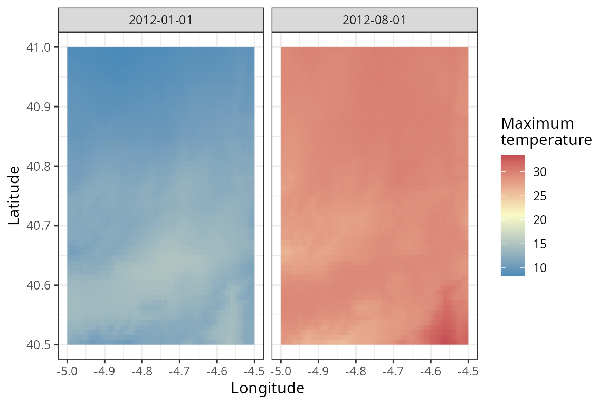
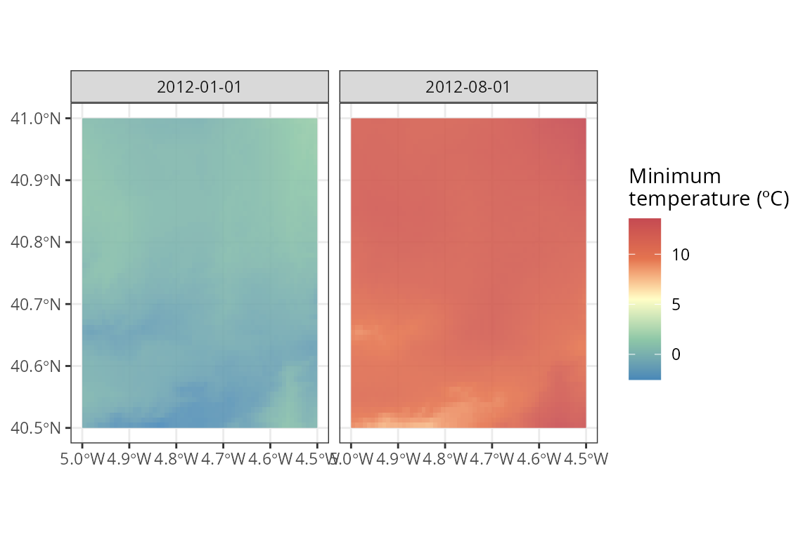
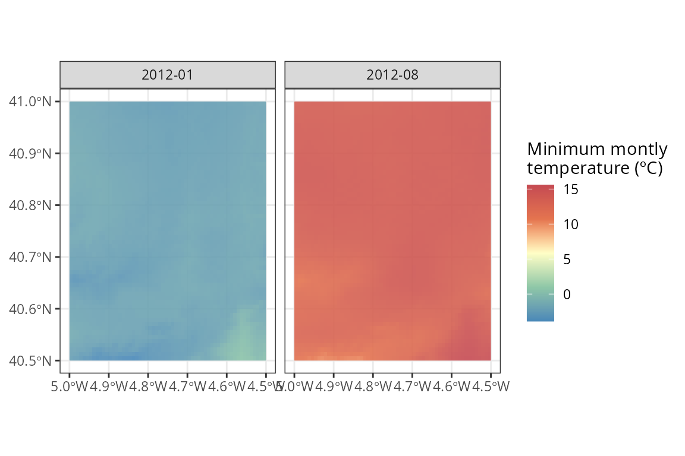

Analysing the climate of an area for a given period
Source:vignettes/polygons-raster.Rmd
polygons-raster.RmdWith {easyclimate} you can easily download daily, monthly and annual climate data for a given set of points or polygons within Europe. To download and install the latest version of {easyclimate} from GitHub follow the instructions in https://github.com/VeruGHub/easyclimate
In this tutorial we will work through the basics of using {easyclimate} with a spatial polygon.
If you wish to download the climatic data of a specific region, you
need to specify at least four corners of the polygon including the area
and specify the type of output you want to obtain (i.e. a data frame -
df or a raster - raster). You can also provide
the polygons of interest in a sf object.
library(easyclimate)
library(terra)
coords_t <- vect("POLYGON ((-4.5 41, -4.5 40.5, -5 40.5, -5 41))")
Sys.time() # to know how much it takes to download
## [1] "2026-07-24 16:16:35 CEST"
df_tmax <- get_daily_climate(
coords_t,
period = c("2012-01-01", "2012-08-01"),
climatic_var = "Tmax",
output = "df" # return dataframe
)
Sys.time()
## [1] "2026-07-24 16:20:34 CEST"
head(df_tmax)
## ID_coords lon lat date Tmax
## 1 1 -4.995833 40.99583 2012-01-01 8.59
## 2 1 -4.987500 40.99583 2012-01-01 8.48
## 3 1 -4.979167 40.99583 2012-01-01 8.57
## 4 1 -4.970833 40.99583 2012-01-01 8.56
## 5 1 -4.962500 40.99583 2012-01-01 8.55
## 6 1 -4.954167 40.99583 2012-01-01 8.54Then, you can visualize the results and compare both dates:
library(ggplot2)
tapply(clim_df$Tmax, clim_df$date, summary)
## $`2012-01-01`
## Min. 1st Qu. Median Mean 3rd Qu. Max.
## 8.28 10.15 11.94 11.66 12.98 15.07
##
## $`2012-08-01`
## Min. 1st Qu. Median Mean 3rd Qu. Max.
## 25.88 28.71 29.22 29.10 29.61 33.50
ggplot() +
geom_raster(data = clim_df,
aes(x = lon, y = lat, fill = Tmax)) +
scale_fill_gradient2(name = "Maximum\ntemperature",
low = "#4B8AB8", mid = "#FAFBC5", high = "#C54A52",
midpoint = 21, ) +
facet_wrap(~date) +
ylab("Latitude") + xlab("Longitude") +
theme_bw()
You can get a (multi-layer) raster directly as output, if you specify
output = raster:
library(tidyterra)
Sys.time()
## [1] "2026-07-24 16:20:55 CEST"
ras_tmin <- get_daily_climate(
coords_t,
period = c("2012-01-01", "2012-08-01"),
climatic_var = "Tmin",
output = "raster" # return raster
)
Sys.time()
## [1] "2026-07-24 16:21:13 CEST"
ras_tmin
## class : SpatRaster
## dimensions : 60, 60, 2 (nrow, ncol, nlyr)
## resolution : 0.008333333, 0.008333333 (x, y)
## extent : -5, -4.5, 40.5, 41 (xmin, xmax, ymin, ymax)
## coord. ref. : lon/lat WGS 84 (EPSG:4326)
## source(s) : memory
## varname : DownscaledTmin2012_cogeo
## names : 2012-01-01, 2012-08-01
## min values : -2.54, 7.60
## max values : 1.84, 13.56
ggplot() +
geom_spatraster(data = ras_tmin, alpha = 0.9) +
facet_wrap(~lyr, ncol = 2) +
scale_fill_whitebox_c(name = "Minimum\ntemperature (ºC)", palette = "muted") +
theme_bw()
You can also get a raster of monthly and annual climate data for an area:
Sys.time()
## [1] "2026-07-24 16:21:35 CEST"
ras_monthly_tmin <- get_monthly_climate(
coords_t,
period = c("2012-01", "2012-08"),
climatic_var = "Tmin",
output = "raster" # return raster
)
Sys.time()
## [1] "2026-07-24 16:21:36 CEST"
ras_monthly_tmin
## class : SpatRaster
## dimensions : 60, 60, 2 (nrow, ncol, nlyr)
## resolution : 0.008333333, 0.008333333 (x, y)
## extent : -5, -4.5, 40.5, 41 (xmin, xmax, ymin, ymax)
## coord. ref. : lon/lat WGS 84 (EPSG:4326)
## source(s) : memory
## varname : DownscaledTmin2012MonthlyAvg_cogeo
## names : 2012-01, 2012-08
## min values : -3.89, 10.11
## max values : 0.60, 15.59
ggplot() +
geom_spatraster(data = ras_monthly_tmin, alpha = 0.9) +
facet_wrap(~lyr, ncol = 2) +
scale_fill_whitebox_c(name = "Minimum montly\ntemperature (ºC)", palette = "muted") +
theme_bw()
Learn more
Now you know how to extract climatic variables with {easyclimate}, for a specific area. Check out this other vignette if you need to extract the data for specific points.